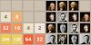

-  Build Your Own 2048!
I made my own version of 2048. How cool is that!?
- Website Performance Optimization
Hey... this class looks familiar.
 Mobile Web Development
Mobile Web DevelopmentMaking mobile apps isn't so hard after all.
 Cam's Pizzeria
Cam's PizzeriaWho wants a performant pizza?